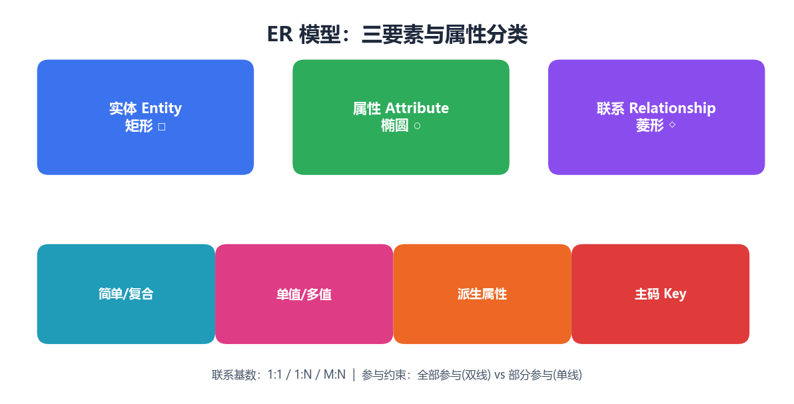
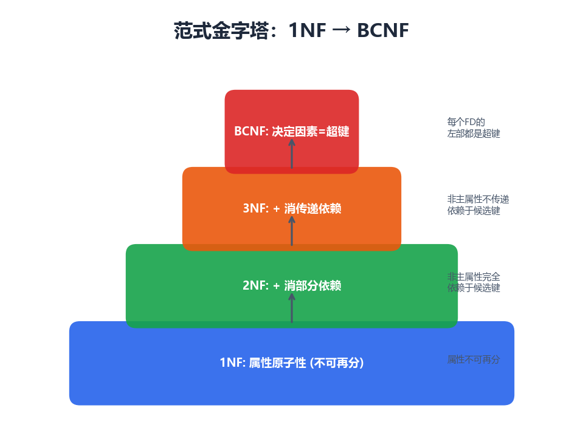
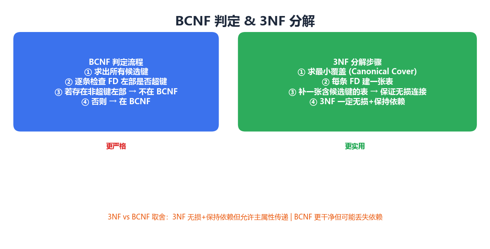

1ER建模
1.1 本讲目录
1.2 ER模型三要素：实体·属性·联系

- 实体（Entity）：客观存在、可相互区分的事物。图形：矩形
- 属性（Attribute）：实体或联系具有的特征。图形：椭圆
- 联系（Relationship）：实体之间的关联。图形：菱形
一句话：ER图就是用「矩形—菱形—椭圆」把现实世界画成一张关系网，是数据库设计的第一步、也是设计大题的核心。
1.3 属性的四组分类（必考概念）
- 简单属性 vs 复合属性：简单不可再分（如年龄）；复合可再分为更小属性（如地址=省+市+街道）
- 单值属性 vs 多值属性：单值一个实体只有一个值（如学号）；多值可有多个值（如电话），ER图用双线椭圆
- 派生属性：可由其他属性计算得到（如年龄由出生日期推算），ER图用虚线椭圆，通常不存储
- 主码属性 Key：能唯一标识实体的属性（集），ER图中加下划线，对应关系表的主键
考点提示：多值属性（双线椭圆）和复合属性在「ER转关系模式」时处理方式不同——多值属性要单独建表。
1.4 联系的基数比与参与约束
- 1:1（一夫一妻型）：A中一个实体最多对应B中一个，反之亦然。例：班级—班长
- 1:N（一对多型）：A中一个实体可对应B中多个，B中一个只对应A中一个。例：出版社—图书
- M:N（多对多型）：A、B双方都可对应对方多个实体。例：学生—课程/读者—图书
参与约束 Participation：
- 全部参与（双线）：每个实体都必须参与联系（如「每名员工必属于一个部门」）
- 部分参与（单线）：实体可以不参与（如「部门可以暂时没有员工」）
决定外键能否为NULL。
1.5 图书馆ER图例题
评分点：五个实体（矩形）+ 四个联系（菱形）+ 基数标注：Publishes 1:N、Writes M:N、Borrow M:N、Holds M:N。实体主码加下划线即可得满分。
2ER转关系模式
2.1 ER转关系模式：五条规则
- ① 强实体：直接建表，实体主码→主键
- ② 1:1联系：把任意一端的主键作为外键放到另一端表中（择全部参与方更优）
- ③ 1:N联系：在「N端」表里加入「1端」的主键作为外键
- ④ M:N联系：新建联系表，包含双方主键（作联合主键）+ 联系自身属性
- ⑤ 多值属性：单独建表，包含实体主键 + 该多值属性（二者作联合主键）
口诀："1:N看N端、M:N单建表、多值也建表。"外键永远指向被引用表的主键。
2.2 图书馆ER转关系模式（含主外键）
评分点：Publishes是1:N→在N端Book加外键Pub_id（不单建表）；其余三个M:N→各建一张联系表，联合主键由双方主键组成。
3函数依赖与码
3.1 函数依赖：完全·部分·传递
- 完全函数依赖（Full FD）：X→Y且X的任何真子集都不能决定Y。例：(学号,课号)→成绩。2NF要求
- 部分函数依赖（Partial FD）：X→Y，但X的某个真子集已能决定Y。例：(学号,课号)→姓名，其实学号→姓名。违反2NF
- 传递函数依赖（Transitive FD）：X→Y、Y→Z且Y↛X，则X传递决定Z。例：学号→系名→系主任。违反3NF
范式的主线：2NF消除「部分依赖」、3NF消除「传递依赖」——一层层把这两种"坏依赖"赶走，就是规范化。
3.2 Armstrong公理 + 属性闭包X⁺算法
Armstrong公理（3基本+3推论）：
- 自反律 Reflexivity：Y⊆X ⇒ X→Y
- 增广律 Augmentation：X→Y ⇒ XZ→YZ
- 传递律 Transitivity：X→Y, Y→Z ⇒ X→Z
- 合并律 Union：X→Y, X→Z ⇒ X→YZ
- 分解律 Decomposition：X→YZ ⇒ X→Y, X→Z
- 伪传递律 Pseudo：X→Y, WY→Z ⇒ WX→Z
属性闭包X⁺算法：
- result = X
- 若有FD V→W且V⊆result：result = result ∪ W
- 重复②直到result不再变化
为什么要闭包：X⁺就是"由X出发能推出的全部属性"。若X⁺覆盖了全部属性，就说明X是超键——这是求候选键、判范式的统一工具。
3.3 闭包法求候选键：先分类，再试探
- L类·只在左边出现：必在每个候选键中
- N类·两边都不出现：必在每个候选键中
- R类·只在右边出现：一定不在候选键中
- LR类·两边都出现：可能在候选键中（试探）
口诀：先圈出"必在键中"的属性（只在左边/两边都不出现），求闭包；不够全，再逐个并入两边都出现的属性。
3.4 求最小覆盖（Canonical Cover）
- 右部单属性化：拆成单属性右部，便于逐条检查
- 去左部冗余属性：左部只有一个属性时不存在多余属性
- 去冗余依赖：用闭包验证：去掉后仍能推出即冗余
4范式与分解
4.1 范式金字塔：层层递进

- 1NF：属性不可再分（原子性）
- 2NF：+ 消除非主属性对码的部分依赖
- 3NF：+ 消除非主属性对码的传递依赖
- BCNF：+ 每个决定因素都是超键
一句话：每升一级，就多赶走一种坏依赖：2NF赶部分依赖、3NF赶传递依赖、BCNF要求所有决定因素都是超键。
4.2 1NF原子性·2NF消部分依赖
1NF 原子性：每个分量都是不可再分的原子值：没有重复组、没有多值属性、没有"表中表"。关系数据库天然满足1NF。
2NF 消除部分依赖：1NF基础上，每个非主属性都「完全」依赖于候选键。只有「复合主键」才可能违反2NF。
4.3 3NF：消除传递依赖
判定法则：R满足2NF，且对每一个非平凡FD X→A，都有：X是超键 或 A是主属性（属于某候选键）。两者居其一即可。
例·学生—系—系主任 违反3NF：学号→系名→系主任，系主任传递依赖于学号（系名非超键、系主任非主属性）
分解（消去传递）：R1(学号, 系名) + R2(系名, 系主任)
4.4 判断是否BCNF

BCNF定义：每个FD的决定因素（左部）都必须是超键。
判定方法：逐条检查决定因素是否超键。若存在左部非超键的FD，则R不在BCNF。
4.5 判断3NF并分解
评分点：证明候选键→指出违反3NF的FD→按最小覆盖每条FD建一表→补一张含候选键的表保证无损连接。
4.6 无损连接与保持依赖的取舍
- 3NF：一定能做到「无损连接+保持依赖」；允许主属性的传递，残留少量冗余
- BCNF：冗余消除得更彻底；不一定能保持依赖（可能丢失某些FD）
实践取舍：通常做到3NF即可——既无损又保持依赖；只有当残余冗余不可接受时，才进一步分解到BCNF（接受可能不保持依赖）。
4.7 易错清单
- 1:N在「N端」加外键、别建表；只有M:N才单独建表
- 求候选键：先锁定只在左边/两边都不出现的属性
- 部分依赖只在「复合主键」时出现（2NF）；单属性码天然满足
- 3NF判定：每个FD左部是超键，或右部是主属性
- BCNF比3NF严：决定因素必须全是超键，且不一定保持依赖